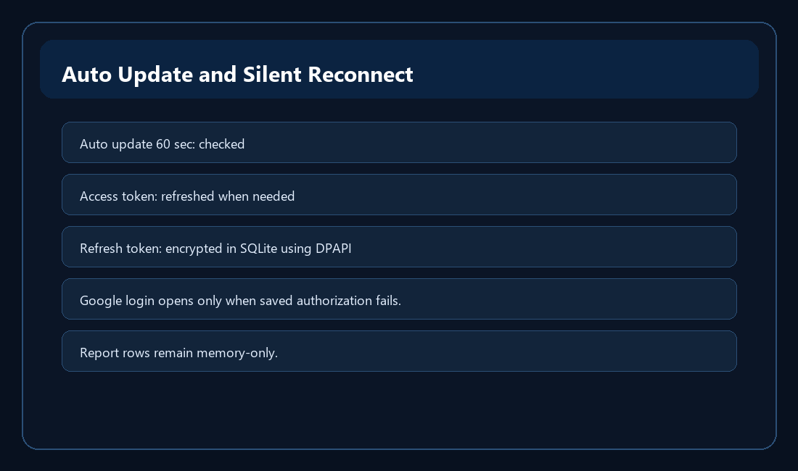

Running the Dashboard All Day

Intended use
- The app is designed to be left open as a glanceable dashboard. With Auto update 60 sec enabled, it can refresh while you work on other things.
- The status bar reports each update or error so ordinary use does not require a separate log window.
Token refresh
- Google access tokens are short-lived. When GA4 returns a refreshable token error, the app attempts to refresh the access token and retry the update once.
- The saved encrypted refresh token normally avoids Google login screens on startup. If it is unavailable, revoked, or cannot be decrypted, reconnect from Settings.